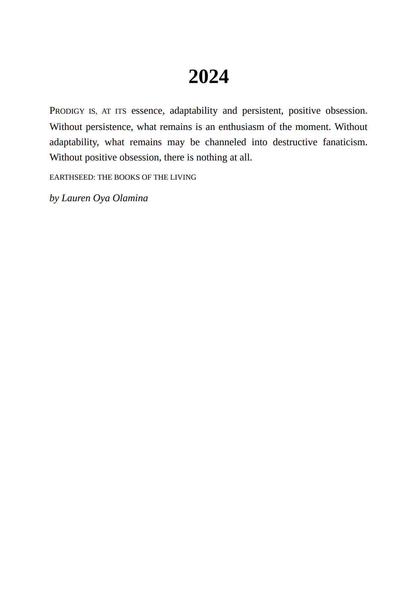

<html>
    <script src="https://aframe.io/releases/1.2.0/aframe.min.js"></script>
    <script src="https://raw.githack.com/jeromeetienne/AR.js/master/aframe/build/aframe-ar.min.js"></script>
    <script src="https://raw.githack.com/donmccurdy/aframe-extras/master/dist/aframe-extras.loaders.min.js"></script>
<script>

</script>
<a-scene cursor="rayOrigin: mouse" embedded vr-mode-ui="enabled: false" arjs="sourceType: webcam; debugUIEnabled: false; detectionMode: mono_and_matrix; matrixCodeType: 3x3;">
    <a-assets>
        
    </a-assets>
    <a-image src="#2024-trans" position="2 3 -15" height="4" width="2.25" animation__position="property: position; to: -2.25 1 2.5; dur: 12000; easing: linear; loop: false"></a-image>
</a-scene>

<style>

</style>
</html>
